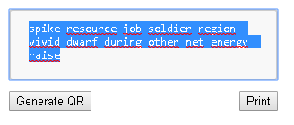
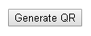
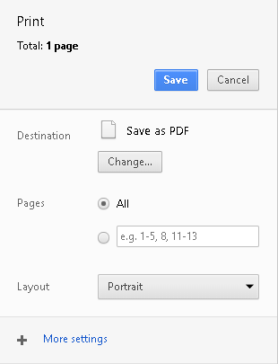

After you loaded this site (a1300.github.io) please disconnect your internet connection to be 100% safe. Please don't insert anywhere on the internet your private key. Trust nobody.
Then input your private key into the field.
Press the button "Generate QR" to generate the QR-Code
With the "Print" button you can print the QR-Code.
After you've printed the paperwallet close the browser and reconnecto to the internet.